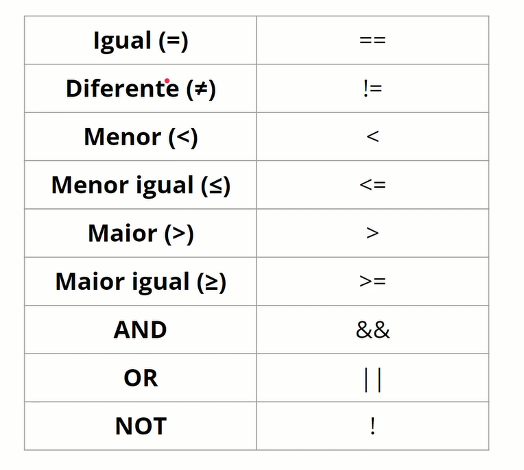
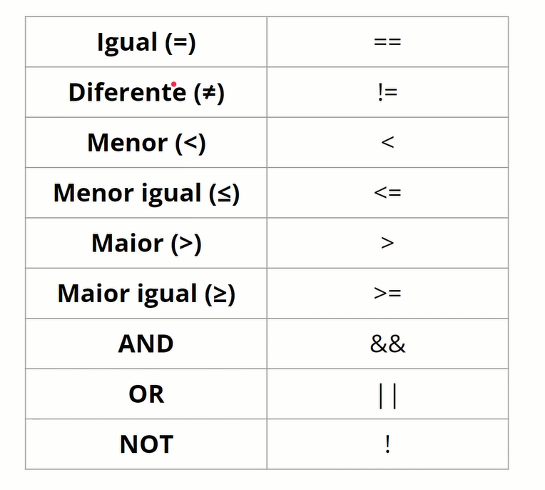
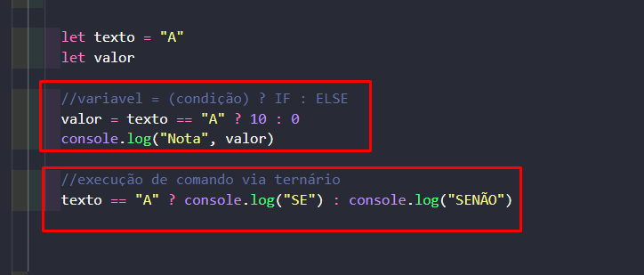
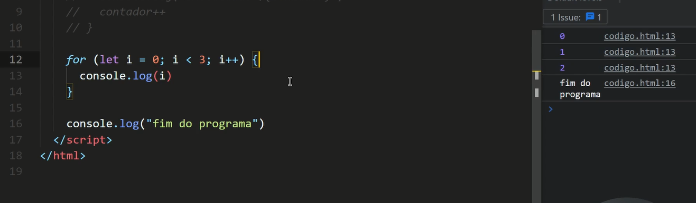
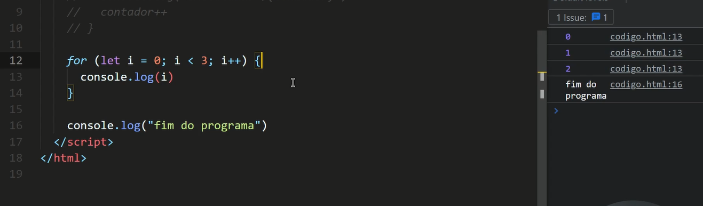

O JavaScript é uma linguagem fracamente tipada, isso significa que "ele" tentará converter em tempo de execução o dados baseado no valor. Exemplos: ```javascript 1 1.2 "Felipe" true ``` Atualmente existem maneiras de "forçar" o tipo, e até formas de utilizar linguagens / supersets focados nisso como o TypeScript. Isso é um ponto de atenção importante dentro do JS, já que a depender do valor da variável o seu programa pode "dar bugs" em função de tipos inesperados. E para isso utilizaremos artifícios como o comparador idêntico.
Conteúdo que esté entre aspas; Ex1: console.log("Diogo Rochembach") Ex2: console.log('Diogo Rochembach') Esses dois exemplos o javascript entende que é uma string ou texto com aspas "" ou aspas ''.
No javascript os numeros são que não são inteiros são separados por "1.2" (ponto), se separarmos por "1, 2" (virgula) o javascript entende que são dois números. Se utilizarmos o .12 o javascript entende que é 0.12 O javascript já possui alguns números gravados na na sua memôria que quando precisar utilizar é só dar um (Math.) Ex3: console.log(Math.PI) onde o sistema vai mostrar na tela o valor de PI = 3.141592653589793 Quando queremos descobrir se um tipo de dado se é string ou number ou outro basta dar um console.log(typeof + o dado) Ex4: console.log(typeof 1) vai retornar "number"; Ex5: console.log(typeof "olá") vai retornar uma string ou texto; Quando for escrever 10000 milhar não se pode usar os separador de milhar; Certo: 10000 (dez mil) Errado: 10.000(dez ponto zero)
Boolean são variáveis que retratam verdadeiro ou falso (true ou false) só podem assumir dois valores. É utilizado para expressar somente dois estados. Ex: Cliente cadastrado (true ou false). Cliente vip (true ou false), lampada ligada (true ou false), forno atingiu a temperatura (true ou false), Cadastro foi realizado com sucesso (true ou false). Devido a sua simplicidade, ecomonizam memôria do computador.
Tipo numérico, que expressa algo que não acaba (infinitude), como um número.
Extressado quando um número não pode ser identificado como um número válido. Ex: console.log("A" / 2) = NaN Console.log(typeof NaN) = number
Null - Ausência de valor. Undefined - Indefinido. console.log(null = se for um valor não há nada dentro, se for uma expreção numérica). console.log(undefined = js não conseguiu identificar o valor da variável) console.log(tyoeof null) = object
Os objetos são identificados por chaves. Nos objetos é possivel acressentar propriedades e funções dentro de objetos. Os objetos são muito importantes para quando é feito transação de informações. Quando vamos capturar registros lá no banco de dados. Os objetos aceitam uma propriedade: valor. Podemos ter um objeto dentro de outro objeto. Ex: console.log({ nome: "Diogo", idade: 39, endereço: { logradouro: "Av", rua: "dos tamoios", numero: 351, bairro: centro } filiação: "pai", filiação: "mae" })
Os array são identificados por colchetes. Array ou vetores são variáveis que armazenam vários valores dentro de um consjunto de informações. Os dados podem ser do type nativos, type object ou array dentro de array. Ex: console.log([1, 2, 3]) console.log([1, "a", "b"]) console.log([1, "a", {nome: "Diogo", sobrenome: "Rochembach"}])
JS trabalha nativamente. 0 == janeiro 1 == fevereiro 2 == março e assim por diante. console.log(Date()) // data e hora corrente => new Date() console.log(new Date()) // data e hora corrente. console.log(new Date(2022, 3, 22)) // data específica e hora corrente. console.log(new Date(2022, 3, 22, 10, 20, 59)) // data e hora específica. neste ultimo temos o primeiro valor o ano que estamos, o segundo valor o mes de Abril, o terceiro valor é o dia 22 do mês, o quarto valor é a hora 10h, 20 minutos e 59 segundos.
São espaços de memorias alocados para determinado valor. Mas quando desligamos o computador esses dados das memorias são perdidos. var nome = valor var - propriedade nome - nome da variavel valor - o valor da variavel Ex: var peso = 83 var altura = 1.8 var resultado = peso / (altura * altura) console.log(resultado)
scopo: - são espaços de execução. - estrutuda de decisão. - estrutura de repetição. - uma função. Essa variavel VAR é possivel acessar o seu valor dentro do escopo blobal e local. VAR equivalente a uma "variável global".
A variável LET quando definida num escopo blobal é possivel acessa-la e altera-la dentro de um escopo local. Mas quando definida dentro de um escopo local, não pode ser acessada nem alterada pelo escopo blobal.
A const ou constante uma vez definida não podem ser alteradas mais pra frente do código. Indiferente do contexto global ou local, sempre vai dar o mesmo erro. não acessível fora do seu contexto.
Regras de nomes de varoáveis dentro do javascript. // variáveis não podem conter espaços Ex: let nomeCompleto = "Diogo Rochembach" let nome_completo = "Diogo Rochembach" // Variáveis precisam iniciar com uma LETRA, _ OU $ let num1 = 10 // Variáveis podem conter apenas Letras, numeros, _ ou $ Ex: let dataNascimento = new Date(1983, 02, 18). // Case-sensitive: let cpf = "123.456.789-00" let Cpf = "123.456.789-00" let CPF = "123.456.789-00" Essas 3 variáveis são diferentes //Variáveis não podem utilizar palavras reservadas: # Palavras reservada: abstract boolean break byte case catch char class const continue debugger default delete do double else enum export extends false final finally float for function goto if implements import in instanceof int interface long native new null package private protected public return short static super switch synchronized this throw throws transient true try typeof var void volatile while with
Declaration assignment var-let (Atribuição de declaração): Quando declaramos uma variável ou uma constante, no momento que que estamos criando. Deixando a variável pronta para um determinado uso.
ex: let name, age, address. depois no decorrer do código pode ser chamado a variável. // let name, age, address; // name = "Diogo"; // console.log("name", name); // "vai retornar NAME DIOGO no console"
let name, age; (name = "Pedro"), (age = 22); address = { street: "Rua Central", city: "São José dos Campos", }; // Concatenação (antiga) console.log( name + " tem " + age + " anos. E reside em " + JSON.stringify(address) ); // interpolação (novo) console.log( `${name} tem ${age} anos. E reside em ${JSON.stringify(address)}` );
Para variáveis do tipo "const" não se pode atribuir mais de um valor ou trocar o valor. Mas quando estamos falando em variáveis "const" do tipo "object" e "array" podemos reatribuir valores. Os objetos são bem flexiveis e tem uma gama de utilização. Através do conceito de object é que a gente constroi APIs, Rest, consulda de banco de dados, pois sempre retornam um objeto que a jente pode acessar as suas propriedades. const person = { name: "Diogo", age: 40, address: { street: "Av. Central", city: "São Jose dos Campos", }, }; person.name = "Pedro"; person.hairColor = "Black"; console.log(person); console.log(person.name); console.log(person.age); console.log( `${person.name} tem ${person.age} anos e reside na cidade de ${person.address.city}.` );
//descobrir a quantidade de elementos dentro de um array? console.log(persons.length) //Array + Object const persons = [ { name: "Felipe", age: 40 }, { name: "Ana", age: 35 }, { name: "Paulo", age: 22 }, //"zé", //não seria uma boa prática (misturar tipos dentro do array). ]; persons[0] = "Zé"; //neste caso estamos forçando o valor "Zé" para entra na primeira posição // persons [999] = "Zé" // não seria uma boa prática (esta fora do rande dos indices) console.log(persons[0]); console.log(persons[1]); console.log(persons[2]); console.log(persons[3]); console.log(persons.length);
Tema especial dentro do JS pois utilizamos toda hora quando vamos fazer um sistema, API, ou um consumo de dados. - Bibliotecas (https://momentjs.com) - Biblioteca (https://date-fns.org) # Date Refs. - https://developer.mozilla.org/en-US/docs/Web/JavaScript/Reference/Global_Objects/Date - https://www.w3schools.com/jsref/jsref_obj_date.asp 1. Date é um tipo específico do JS 2. Possuem métodos próprios para manipulação get e set. 3. São melhores quando se utilizados com bibliotecas (moment.js e fs-date) ## Como se declara uma variável Date no JS ```javascript new Date() // inicializa com a data e hora atual do computador. new Date(year, month, day, hours, minutes, seconds, milliseconds) // inicializa com valores pré-definidos. new Date(dateString) // inicializa a partir de uma string. ``` ## Principais métodos - `getDay()` e `setDay()` - Retorna / define o dia da semana (0-6). - `getDate()` e `setDate()` - Retorna / define o dia do mês (1-31). - `getMonth()` e `setMonth()` - Retorna / define o mês (0-11). - `getFullYear()` e `setFullYear()` - Retorna / define o ano. - `getHours()` e `setHours()` - Retorna / define a hora (0-23). - `getMinutes()` e `setMinutes()` - Retorna / define os minutos (0-59). - `getSeconds()` e `setSeconds()` - Retorna / define os segundos (0-59). - `parse()` - Recupera uma data a partir de uma string. - `toString()` - Retorna uma data como string. - `toISOString()` - Retorna uma data como string no padrão ISO. - `toTimeString()` - Retorna a hora apenas.


Quando vamos trabalhar com algumas contas ou equações, ex: (10 + 10 + 10) / 3 os parenteses forçam a precedencia.
Somando de 1 em 1; //num = num + 1 // 0+1 //num++ // 1+1 (o operador de atribuição do lado direito retorna e logo na sequência atribui); //num-- // 2-1 //++num (operador de atribuição do lato esquerdo atribui "ele conta, faz a operação" e então retorna); //--num // +=, -=, *=, /= let num = 0 num += 2 // num = num + 2 = 2 num *= 2 // num = num * 2 = 4
exta expreção abaixo se le da seguinte fomra: zero, SE(?) ele for
verdadeiro vai escrever na tela 'verdadeiro' SENAO(:) vai escrever 'falso'
console.log( 0 ? "verdadeiro" : "falso") = falso //console.log("" ?
"verdadeiro" : "falso") = falso


Operadores Boleanos
Operadores boleanos: OU/OR(||) - E/AND(&&) - NÃO/NOT(!)
OU - OR - (||) - (se algum dos valores que estiver sendo comparado for
"true" toda a expreção se torna verdadeira)
 E - END - (&&) - (se tiver algum valor false, a expressão inteira fica
false)
E - END - (&&) - (se tiver algum valor false, a expressão inteira fica
false)
 O AND (&&) tem precedência (preferência) sobre o OU (||)
O AND (&&) tem precedência (preferência) sobre o OU (||)


Programação procedural, programa lê o código como se estivesse lendo um livro,
da esquerda para a direita e de cima para baixo.
MICRODECISÕES: são decisões bem mensuradas.
se(consição verdadeira)faz algo
senão() faz outro

 

- O IF no JavaScript cria um desvio no contexto de execução.
- Tudo que estiver dentro do sparenteses o if vai executar.
- Tudo que for verdadeiro vai ser executado.
- Lembrando que se o IF for falso o programa não executa o IF e segue o fluxo normal.

IF ou SE - executa a função quando a condição for verdadeiro
ELSE ou SENÃO - executa a função quando a condição for falsa

- Utilizado para expandir o IF - ELSE
- necessita que seja usado o IF e o ELSE
ex: na linha 452


- Faz uma comparação simples compadado com o if e else.
- So consegue fazer uma analise por igualdade e não complexa.
- Não conseguimos definir valor maior > valor menor < valores diferentes e sim sempre
com esse tipo de condição. EX: Ura de atendimento, compras digite 1, vendas digite 2 etc.
- Pode trabalhar com números, letras, true, false;
- Switch case é mais performático que o if.

TRY - seria o IF dos erros para quando precisar executar alguma coisa que tem comunicação
externa: consulta de API, Banco de Dados, arquivos...
TRY - utilizado para fazer qualquer serviço (comunicação) externo.
CATCH - é o else do if.
- nunca deixar o catch vazio.

Estruturas de repetição - WHILE ou ENQUANTO - Enquanto a condição for verdadeira o programa continua executando. - No while ou enquanto o programa fica no loop ate que a condição seja falsa.
Podemos executar infinitas vezes a condição até que a condição de parada seja alcançada.
- O FOR é utilizado quando precisamos percorrer uma lista, normalmente um array.
- A propriedade LENGTH é uma propriedade de uma array que sempre retorna a quantidade de
elementos que aquele array possui.
 - FOR - é utilizado quando precisamos buscar em um array uma posição específica.
- O FOR tem a estrutura do while, mas permite mais condições dentro sa função.
- For possui uma estrutura do while, mas de uma forma mais enxuta.

- FOR - é utilizado quando precisamos buscar em um array uma posição específica.
- O FOR tem a estrutura do while, mas permite mais condições dentro sa função.
- For possui uma estrutura do while, mas de uma forma mais enxuta.


FOR OF - faz iteração sobre um array
FOR OF - Mais inxuto que o FOR ele nos traz todo o conteúdo do array, que é uma lista de
elementos dentro da variável.

- Conseguimos iterar sobre um objeto.
- Segue o mesmo principio do FOR OF iniciando com uma variável (criar uma variável que vai)
que vai receber a propriedade e apos o IN adiciona-se o objeto da consulta.
 - Um objeto pode der acessado de duas formas: // obj. prop // obj. ['prop'], como string.
- Um objeto pode der acessado de duas formas: // obj. prop // obj. ['prop'], como string.